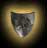
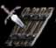

De manière très sommaire, le calcul d'une attaque dépend du nombre et de la force offensive des troupes
envoyées à la bataille par rapport au nombre et la force défensive des troupes de la seigneurie
visée. Pour mieux comprendre, regardons cet exemple.
Un seigneur orc envoie 250 trolls (unité d'élite des orcs) qui possèdent une force offensive de 10
points et aussi 100 guerriers qui possèdent une force offensive de 5 points. Un seigneur humain est visé
par cette attaque, il a à sa disposition 400 paladins(unité d'élite humaine) qui possèdent une force
défensive de 5 points et 300 sentinelles qui possèdent une force défensive de 4 points. Pour voir
la force des différentes unités, consultez le GUIDE MILITAIRE.
Donc voici le calcul très simple:
 |
Pour l'orc ( 250 * 10 ) + ( 100 * 5 ) = 3000 points de force offensive. |
|
Pour l'humain ( 400 * 5) +( 300 * 4 ) = 3200 points de force défensive |
Dans cette situation très simple, l'orc serait repoussé par le seigneur humain
et ne gagnerait aucun acre durant cette bataille. En plus, les troupes envoyées dans la bataille ne sont
plus disponibles pour défendre ses propres terres et il serait plus vulnérable à une
contre-attaque par un seigneur ennemi. Cette situation très simple ne se produit pas dans HainyaH, car
il a de nombreux facteurs additionnels qui influencent l'issue d'une bataille. C'est ce qui fait de la guerre
un art si dur à maîtriser et qui demande de l'expérience.

Voici les différents facteurs qui influencent une bataille.
|
- Les chevaux permettent d'augmenter la force offensive des unités de 1 point.
|
 |
- Un château procure 500 points de force défensive. |
 |
- Les sorts de protection donnent un % de défense supplémentaire qui est ajouté à la
force défensive. |
|
- Des sorts spéciaux augmentent la force d'une unité précise. |
 |
- Les conseillers peuvent augmenter en % la force offensive ou défensive déployée par une seigneurie. |
| |
- Des races bénéficient de caractéristiques particulières les aidant durant les batailles. |
|
- La science tactique permet d'augmenter le déploiement de force offensive de l'attaquant. |
 
| - Une attaque de siège ou de mage-voleur est différente sur plusieurs points d'une attaque traditionnelle. |
 |
- Le général offensif et le général défensif aident durant un combat.
Chaque point d'expérience d'un général offensif procure un point de force supplémentaire
lors d'une attaque et chaque point d'expérience du général défensif procure un point de force
supplémentaire lorsque l'on subit une attaque ennemie. Pour le général offensif, un maximum de
20 points par acre est calculé. |
 |
- Les dieux s'impliquent en envoyant des archanges dans une bataille jugée inégale. |
| |
- D'autre bâtiments peuvent influencer l'attaque ou la défense. |
| |
- Le bonus du conquérant vous procure 10% d'attaque supplémentaire mais donne aussi 10% d'attaque contre le conquérant.
(Non applicable dans les royaumes divins) |
| |
- S'ajoute à ces facteurs, un pourcentage de chance qui peut influencer sur l'issue d'une bataille. |

| - Il est important de lire le rapport de vos généraux avant de passer à l'attaque. |
| - Une attaque qui ne bénéficie pas de l'approbation des Dieux est plus risquée
car les Dieux apportent leurs appuient à la seigneurie qui fait l'objet d'une attaque déloyale. Tout
dépendant du rapport de force (en acre), les Dieux quand ils sont en désaccord avec une attaque vont
envoyer un bataillon d'archanges pour aider la seigneurie en danger. Ce bataillon peut s'estimer en unité
par la différence d'acre entre l'attaquant et la seigneurie attaquée. Si l'attaque est vraiment
impardonnable, des archanges d'élite ayant une force défensive de 50 points se joindront à
l'armée du défendeur. Si l'offense est mineure, des archanges de la garde régulière ayant
une force défensive de 10 ou 25 points viendront appuyer le seigneur oppressé. |
| - Il est important d'utiliser les boules de cristal du magicien(ne) et les informations militaires
des voleurs pour estimer la force défensive de l'adversaire. |
| - Les informations militaires obtenues par les voleurs appartenant à la guilde du vol ne
sont pas précises. |
| - Une seigneurie qui a subi d'autres attaques récemment reçoit aussi une aide des dieux.
Plus une seigneurie a subi des attaques plus les dieux l'aideront. |
| - Il est important de ne jamais envoyer plus de 50 % de notre force défensive dans une bataille car
les risques de contre-attaque sont très élevés. |
| - Le fait d'envoyer une force offensive dérisoire face à la force défensive de l'ennemi,
c'est-à-dire moins de 50% aura pour résultat un véritable massacre. Non seulement, vous ne
gagnerez pas d'acre, mais très peu de vos troupes reviendront de cette périlleuse aventure tandis
que l'ennemi ne subira aucune perte dans ses rangs. |
| - Si une attaque est réussie, les pertes militaires de l'attaquant sont moins élevées que
le défenseur et vice versa. |
| - Des unités sont plus résistantes que d'autres, en général les élites auront
moins de pertes au combat que les guerriers et les sentinelles. Les archers sont très résistants lorsque
l'attaque échoue, mais se font massacrer si l'attaquant brise vos défenses, et ce, surtout en attaque
de siège. |
| - Une attaque ne peut pas prendre moins de 10 jours hainyen. |
| - Le sort du cercle de l'eau Brume fait en sorte d'augmenter le temps de retour d'attaque si la seigneurie visée
est protégée par cet effet magique. |
| - Attention, il est impossible d'attaquer quand l'utilisation de votre seigneurie est
en dessous de 50%. |
| - Le fait d'attaquer une seigneurie plus petite que la votre de 20% commencera à diminuer vos gains.
Plus la seigneuries est petite par rapport à la votre plus petits seront vos gains. |
- Attention, il est impossible d'attaquer si vous ne laissez pas 3 unités par acres en défense.
Seul les guerriers, sentinelles, archers et élites sont considérés dans le 3 unités par acre. |

|
Ce style d'attaque qui est le plus courant et le plus classique se déroule en une seule
opération. C'est l'attaque à choisir pour affaiblir un ennemi sans trop vous exposer aux contre-attaques.
Les risques sont moins élevés et les pertes militaires aussi. Avec ce type d'attaque vous n'êtes pas
obligé d'être en guerre. Il est aussi possible avec ce type d'attaque de traquer les voleurs de l'ennemi pour
affaiblir sa puissance au niveau du vol. Lorsque cette option est choisie, les voleurs ennemis procurent une force défensive
de 2 points par voleur. |
|

 |
Ce type d'attaque utilise vos armes de siège et peut se faire en guerre uniquement, les
armes de siège que vous disposez tentent d'affaiblir l'ennemi avant l'attaque finale. Les trébuchets
vont détruire les murs, les places forte et les tours de guet tandis que les onagres vont tuer les unités militaires de l'ennemi. Les tours de
guet permettent de limiter les dégâts causées par les armes de sièges en prévoyant les manoeuvres de l'ennemi.
Après ce premier assaut, la forteresse de l'ennemie est chargée et si vous percez ses défenses les gains en
acres seront plus importants. Chaque attaque de siège provoquera des pertes en onagres et en trébuchets et un échec
lors de l'assaut final provoquera des pertes militaires très élevées dans vos rangs. Noter que
les archers du défenseur offrent 5 points de défense au lieu de 3 points lors de ce style d'attaque et que
2 paysans ou mendiants procurent un points de défense. |
|

 |
Ce style d'attaque implique votre mage ainsi que vos voleurs et peut se faire en guerre uniquement.
Si vous utilisez ce style d'attaque, votre mage ne pourra plus être utilisé durant la durée de l'assaut. Il permet quand
même de résister aux sort ennemis à sa clairvoyance qui protège votre seigneurie a distance mais ne lui permet pas de lancer
de nouveau sort. Le mage est impliqué dans le combat de deux façon, son expérience en magie procure une force d'attaque (en %)
supplémentaire lors de l'assaut. Le magicien ennemi procure lui aussi une défense (en %) de son coté. De plus, le mage
utilisera un des trois sorts (voir les sorts plus bas) durant le combat dans l'espoir d'influencer un facteur de la bataille.
Le mage ennemi en fait autant de son côté. Les voleurs sont impliqués dans l'assaut en procurant 3 points d'attaque et 2
points en défense. Il ne seront plus disponible pour les vols durant la durée du combat. Les gains en acres dans le cas
de la réussite de cette attaque sont importants quoique moins grands que lors d'une attaque de siège. Il est aussi bon
de noter que quelques acres sont complètement détruites et ne pourront augmenter votre territoire.
Voici les sorts que les mages peuvent lancer.
(le sort choisit par le mage est un pur hasard)
En attaque
Le marteau de HAI
- Ce sort permet d'augmenter votre force d'attaque.
Le lancer de Talandelle
- Ce sort permet d'augmenter vos gains en acre.
Le souffle de Scarb
- Ce sort permet de réduire le temps de retour de vos troupes.
En défense
Le vortex mystique de YAH
- Ce sort permet d'augmenter votre force de défense.
Le rideau d'illusion d'Enric
- Ce sort permet de réduire vos pertes en acres.
La brume d'Esmolas
- Ce sort augmente le temps de retour des troupes ennemis. |
 |

 |
Ce style d'attaque est dirigé par les voleurs. C'est une attaque éclair dont l'objectif
est d'affaiblir l'ennemi en lui volant ses ressources, en déconcentrant son mage et en éliminant ses
unités militaires. Les gains en acres sont très faible. Ce type d'attaque n'est pas disponible en
période de paix.
Caractéristiques:
- Chaque voleur dirige un groupe maximale de 4 autres unités(exceptions des chevaux)
- L'attaquant possède 20% de force d'attaque supplémentaire.
- Les voleurs de l'attaquant ont une force d'attaque de 4 points
- Les voleurs de l'ennemi défendent à 2 points.
- La durée minimale est de 6 jours (Aucun facteur ne peut faire baisser ce nombre), les malus de race s'appliquent et
font augmenter le nombre de jour.
- Les gains en ressource varient de 18 à 30% des ressources de la seigneurie cible.
- Les pertes militaires sont 2 à 3 fois plus importantes que les attaque normales sauf si l'attaque échoue.
- Les pertes militaires sont plus élevées pour l'attaquant que lors des autres attaques.
- Le mage ennemi peut perdre jusqu'à 50% de sa concentration.
- Cette attaque ne donne pas d'explorations, ni de points pour les généraux et aucune conversion d'élite (lycan).
- Armure améliorée non disponible lors de ce type d'attaque. |
 |

|
Ce style d'attaque est à éviter le plus possible car il est la démonstration de
conflits internes dans un royaume. Ce type d'attaque n'est utile que pour éliminer une seigneurie déserté de plus de 50 jours
haiyen. Il ne procure aucun gain d'acres et provoque des pertes militaires
3 fois plus importante qu'en attaque traditionnel. Cette attaque n'est pas disponible en préparation de guerre |
|
|